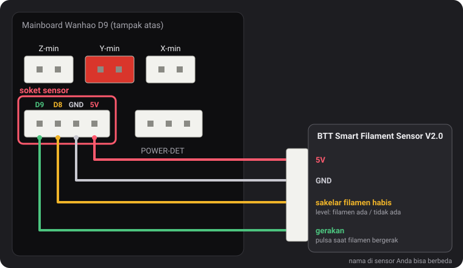
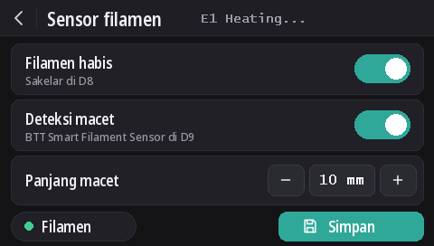

Sensor filamen
Sejak v2.0.5, firmware ini membaca dua jenis sensor: sakelar filamen habis dari Wanhao, dan BTT Smart Filament Sensor V2.0, yang juga mendeteksi saat filamen berhenti bergerak (spool kusut, macet, filamen terkikis gear). Deteksi filamen habis aktif secara default di semua model, sedangkan deteksi macet nonaktif.
Soket sensor

Soket 4 pin di sebelah kiri POWER-DET, di bawah soket endstop, membawa D9, D8, GND, dan 5V, dengan urutan tersebut. Nama pin berasal dari diagram pengkabelan Wanhao yang ditemukan dustovich dan dibagikan di Discord; di bagian belakang board, keempat pin yang sama tertulis CTRL, BTN, GND, dan VCC.
- D8 adalah input filamen habis yang dibaca firmware Wanhao sendiri.
- D9 tidak dipakai oleh firmware Wanhao: build ini membaca sinyal gerakan sensor BTT di pin tersebut.
Di layar
Dengan DGUS Reloaded 2.0 di layar (firmware v2.0.9 atau yang lebih baru): Pengaturan → Filamen → Sensor filamen.
- Filamen habis menyalakan atau mematikan semua deteksi, seperti
M412 S1/M412 S0. - Deteksi macet menyalakan deteksi macet dengan panjang di bawahnya, atau mematikannya (
L0). - Panjang macet: − dan + mengubahnya per 1 mm; ketuk angkanya untuk mengetik nilai.
- Titik Filamen berwarna hijau saat sakelar filamen habis mendeteksi filamen, merah jika tidak.
- Perubahan langsung berlaku. Simpan menyimpannya, seperti
M500. Panah kembali keluar tanpa menyimpan: setelan yang tersimpan akan kembali saat printer dinyalakan berikutnya.

Perintah M412
Semuanya diatur lewat USB dari terminal serial (Pronterface, terminal di slicer Anda atau di OctoPrint,
250000 baud). Parameter bisa digabung dalam satu perintah, misalnya M412 S1 L10.
| Perintah | Fungsinya |
|---|---|
M412 | Menampilkan status, misalnya Filament runout ON ; Distance 5.00mm ; Motion distance 0.00mm. |
M412 S1 | Menyalakan deteksi: sakelar filamen habis, dan juga deteksi macet jika panjang macet bukan 0. |
M412 S0 | Mematikan semua deteksi, sakelar maupun macet. |
M412 D5 | Setelah sakelar tidak lagi mendeteksi filamen, printer tetap mencetak 5 mm sebelum pause, untuk memakai sisa filamen di antara sensor dan nozzle. Default 5 mm. |
M412 L10 | Menyalakan deteksi macet (khusus sensor BTT): pause jika 10 mm filamen melewati extruder tanpa roda sensor bergerak. |
M412 L0 | Mematikan deteksi macet dan membiarkan sakelar filamen habis apa adanya. Ini setelan default. |
M500 | Menyimpan setelan. Tanpa perintah ini, perubahan hilang saat printer dimatikan. |
M119 | Baris filament menampilkan TRIGGERED saat filamen terpasang, open jika tidak. |
M412 L0, dan L yang dipakai sendirian, berasal dari perubahan kami pada Marlin
(MarlinFirmware/Marlin#28585), yang sudah disertakan dalam firmware ini. Di Marlin tanpa perubahan itu, L
sendirian diabaikan dan L0 langsung mem-pause cetakan karena dianggap macet.
Sakelar filamen habis dari Wanhao
Sakelar ini memberi tahu firmware apakah filamen ada. Saat filamen habis, cetakan di-pause setelah 5 mm filamen lagi dan layar memulai proses ganti filamen.
Sakelar ini aktif secara default di semua model, sejak v2.0.8. Jika tidak ada yang terpasang di D8, pull-up pada board menahan pin di 5 V, yang terbaca sebagai “filamen ada”: deteksi tidak pernah terpicu, jadi fitur ini bisa tetap aktif baik ada sensor maupun tidak. Pasang sakelar filamen habis ke D8 dan langsung berfungsi.
- Deteksi macet tetap nonaktif (
L0): sakelar ini tidak bisa melihat filamen bergerak. - Untuk mematikan sakelar:
M412 S0laluM500. - Setelan yang disimpan oleh rilis sebelumnya mempertahankan status aktif/nonaktifnya. Untuk mengaktifkan:
M412 S1laluM500, atau reset ke default (M502laluM500, yang juga menghapus Z offset probe dan mesh Anda).
BTT Smart Filament Sensor V2.0
Sensor ini punya dua output, dan firmware membacanya dengan cara berbeda:
- Sakelar filamen habis (ke D8) berupa level: 5 V selama filamen ada, 0 V setelah filamen habis.
- Output gerakan (ke D9) berasal dari roda kecil yang diputar filamen saat lewat. Setiap beberapa milimeter filamen, output berganti antara 0 V dan 5 V. Firmware hanya memantau perubahan itu: jika extruder mendorong filamen sepanjang panjang macet tanpa satu pun perubahan, berarti filamen tidak ikut bergerak (spool kusut, macet, filamen terkikis gear), dan cetakan di-pause. Sakelar filamen habis tidak bisa mendeteksi hal ini: saat macet, filamen masih ada.
Pengkabelan
5V ke 5V, GND ke GND, sinyal sakelar filamen habis ke D8 dan sinyal gerakan ke D9. Nama yang tercetak di kabel sensor bisa berbeda.
Mengaktifkannya
M412 S1 L10
M500Jika cetakan pause tanpa alasan, naikkan panjang macet: M412 L15 lalu M500. Untuk hanya memakai
sakelar filamen habis: M412 L0 lalu M500.
Memeriksanya
M412: Filament runout ON ; Distance 5.00mm ; Motion distance 10.00mm.M119dengan filamen terpasang: filament: TRIGGERED. Jika baris itu berubah saat Anda mendorong filamen dengan tangan, bukan saat memasukkan atau mencabutnya, berarti dua kabel sinyal tertukar: tukar D8 dan D9.
L0 tidak pernah),
tetapi belum diuji dengan sensor BTT itu sendiri. Jika sakelar terbaca terbalik (open saat filamen
terpasang), beri tahu kami di Discord.Update dari v2.0.5 atau v2.0.6
Rilis tersebut tidak punya cara untuk mematikan deteksi macet, jadi memakai panjang macet yang terlalu panjang untuk bisa tercapai: 100 m di
v2.0.5 (sebenarnya terlalu pendek: sekitar sepertiga spool 1 kg, setelah itu printer yang dibiarkan menyala bisa pause tanpa alasan) dan
10 km di v2.0.6. Saat printer dinyalakan, v2.0.7 memuat kedua nilai itu sebagai L0. Panjang sungguhan yang Anda atur
untuk sensor BTT, seperti L10, tetap dipertahankan. Dari v2.0.4 atau yang lebih lama, jarak filamen habis 5 mm dimuat
sebagai ganti nilai 0 yang disimpan versi-versi tersebut.